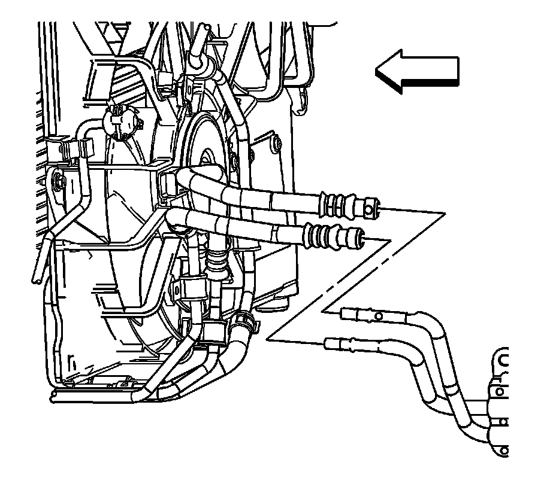
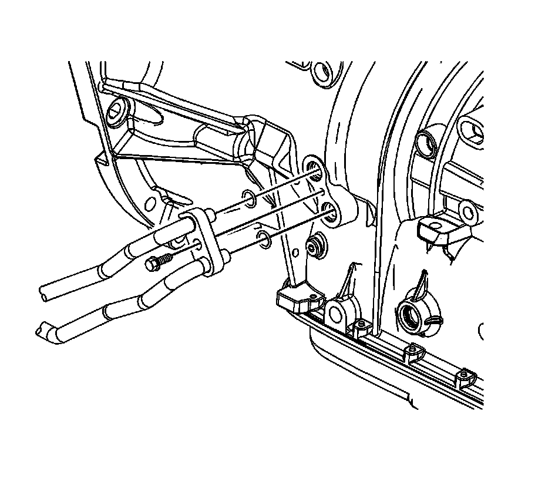
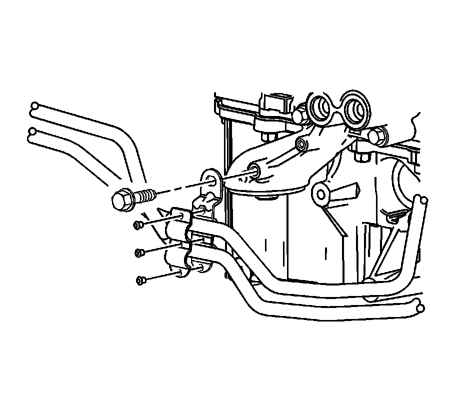

Transmission Fluid Cooler Pipe Replacement - Rear (w/AWD)
Transmission Fluid Cooler Pipe Replacement - Rear (w/AWD)
Tools Required
J 44827 Transmission Cooler Quick Connect
Removal Procedure
1. Remove the engine oil filter. Refer to Engine Oil and Oil Filter Replacement (Service and Repair) .
2. Remove the left hand (LH) intermediate shaft bearing assembly. Refer to Front Drive Axle Intermediate Shaft Bearing Assembly Replacement (Front Drive Axle Intermediate Shaft Bearing Assembly Replacement) .

3. Using the J 44827 , disconnect the front transmission oil cooler (TOC) lines from the rear TOC lines.

4. Remove the rear TOC line to transmission retainer bolt.
5. Disconnect the rear TOC lines from the transmission.
6. Remove and discard the O-rings.

7. Remove the TOC retainer bracket bolt.
Important: Reposition the TOC lines to gain access to the retainer bracket rivets. The TOC lines must be removed individually.
8. Dill out the retainer bracket rivets.
9. Remove the retainer bracket.
10. Remove the TOC lines.
Installation Procedure
1. Install the TOC lines.
2. Install the retainer bracket.
3. Install the retainer bracket to the TOC lines.
4. Rivet the retainer bracket to the TOC lines.
Notice: Refer to Fastener Notice (Fastener Notice) .
5. Install the TOC retainer bracket bolt.
Tighten the bolt to 25 N.m (18 lb ft).
6. Install new O-rings to the rear TOC lines.
7. Connect the rear TOC lines to the transmission.
8. Install the rear TOC line to transmission retainer bolt.
Tighten the bolt to 25 N.m (18 lb ft).
9. Connect the front TOC lines to the rear TOC lines.
10. Install the LH intermediate shaft bearing assembly. Refer to Front Drive Axle Intermediate Shaft Bearing Assembly Replacement (Front Drive Axle Intermediate Shaft Bearing Assembly Replacement) .
11. Install the engine oil filter. Refer to Engine Oil and Oil Filter Replacement (Service and Repair) .